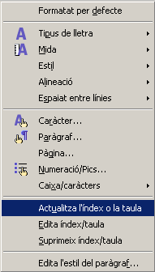

Índex de continguts
Un índex de contingut és un llistat dels títols d'un document amb la indicació dels números de pàgina. La manera més senzilla de configurar un document per un índex de continguts és utilitzar els estils Encapçalament 1, Encapçalament 2… per als temes que es vulgui que apareguin a l'índex de continguts.
Creació d'un índex de continguts
Per crear un índex de continguts cal seguir els següents passos:
-
Situar el punt d'inserció en el lloc on es vol inserir l'índex de continguts.
-
Escollir l'ordre Insereix | índexs i taules | Índexs i taules …
-
En la pestanya Índex / Taula:
-
Escriure el títol de l'índex de continguts al requadre Títol.
-
Seleccionar l'opció Índex de contingut en el desplegable Tipus.
-
En el desplegable Crea un índex/una taula / Per a, escollir Tot el document.
-
A la casella Avalua fins al nivell, escollir el nivell màxim d'Encapçalament que s'avaluarà per crear l'índex de continguts.
-
-
Un cop seleccionades les opcions adients…
-
Al costat de l'opció Esquema, fer clic al botó que hi ha.
-
Del quadre que surt heu de comprovar que cada nivell té assignat l'estil corresponent.
-
Prémer el botó d'Acord.
A diferència d'altres processadors de textos, l'índex de continguts no conté vincles a les pàgines referenciades a l'índex de continguts. No obstant, el LibreOffice Writer disposa d'una eina al Navegador que permet localitzar els diferents capítols, apartats o subapartats que s'hagin pogut afegir al document, sempre que s'hagin fet servir els estils de paràgraf adients.
-
Mostra el Navegador, si no fos visible, prement la tecla F5 o amb Edita | Navegador.
-
Prémer l'eina . En fer-ho, el Navegador mostrarà els diferents nivells de títols del document que es poden controlar amb l'eina Nivells d'encapçalament mostrats.
-
Un doble clic sobre el títol, subtítol, subapartat, etc., permet saltar directament a la zona del document corresponent.
Actualitzar un índex de continguts
Si canvia el document de manera que afecti l'índex de continguts, es pot actualitzar de la manera següent:
-
Situeu el cursor en qualsevol part de l'índex de continguts.
-
Premeu el botó dret del ratolí i seleccioneu l'opció Actualitza l'índex o la taula. També es pot aconseguir amb l'opció Eines | Actualitza | Tots els índexs i taules. 
-
Recupereu el document celula.odt del mòdul 2 que heu realitzat i donat format.
-
Comproveu que tots els títols, subtítols i subapartats estiguin amb els estils encapçalament 1, encapçalament 2…
-
Situeu-vos a l'inici del document i feu un salt de pàgina.
-
En la primera plana, creeu un índex de continguts.
-
Guardeu el document com a celula_index.odt.

|
|

|
|